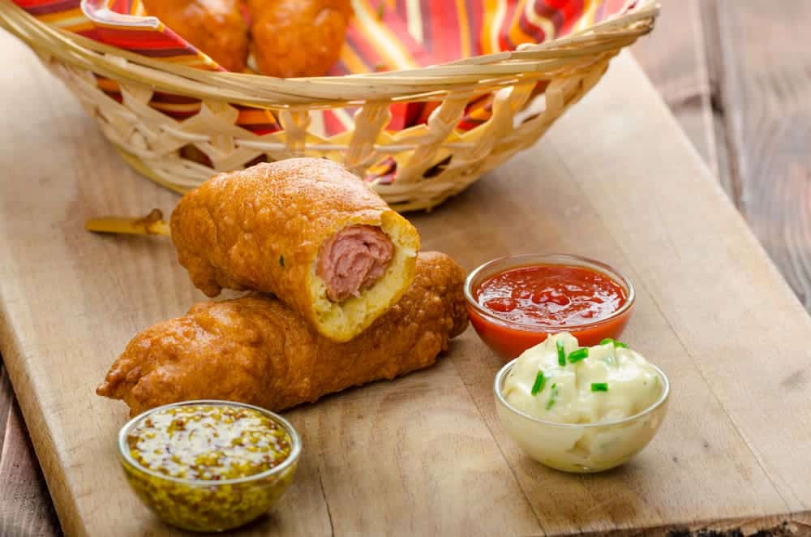
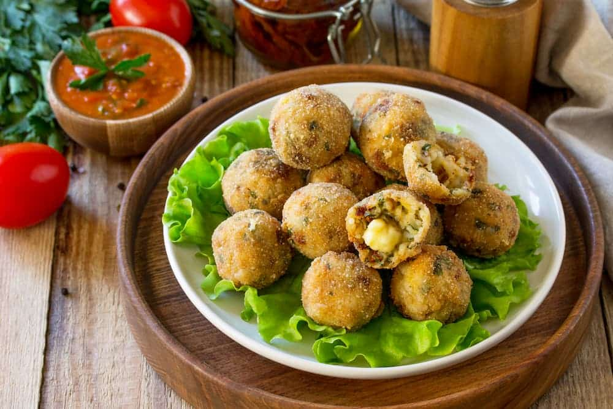

Receta de Banderillas Coreanas
Las banderillas coreanas, o hot dogs coreanos, son una versión renovada de los clásicos corn dogs estadounidenses, pero con una combinación mucho más llamativa de texturas y sabores. Se preparan con salchicha y, muchas veces, queso mozzarella en su interior, recubiertos con una masa esponjosa que al freírse queda dorada y crujiente. Algunas versiones incluso llevan cubos de papa por fuera, aportando un extra de crocancia.
Servidas en un palito y recién fritas, son un clásico de la comida callejera en Corea del Sur. Fáciles de hacer y muy vistosas, son ideales para sorprender con una propuesta original, sabrosa y divertida.
- 4 salchichas
- 250 g de queso mozzarella
- 1 papa mediana
- 150 ml de agua tibia (no caliente)
- 5 g de levadura seca
- 2 cucharadas soperas de azúcar
- 250 g de harina de trigo todo uso
- 1 cucharadita de sal
- 1 cucharada sopera de fécula de maíz
- 1 taza de pan rallado panko
- Aceite suficiente para freír
- Palillos de banderilla
- Opcional: ketchup, mostaza, mayonesa u otro aderezo a elección
Mezclar el agua tibia con la levadura y el azúcar, dejar reposar hasta que espume y luego incorporar la harina y la sal. Unir hasta formar una masa pegajosa y dejar fermentar tapada durante 30–40 minutos, hasta que duplique su tamaño.
Mientras tanto, cortar la papa en cubos pequeños, hervirla 5–6 minutos hasta que esté apenas tierna, escurrirla bien y mezclarla con fécula de maíz. Cortar las salchichas y el queso en trozos del mismo tamaño e insertarlos juntos en los palillos.
Cubrir cada banderilla con la masa fermentada y luego empanar, ya sea directamente con panko o pasando primero por las papas y después por el panko. Freír en abundante aceite caliente (180 °C) durante 2–3 minutos por lado, hasta que estén doradas y crujientes. Retirar, escurrir el exceso de aceite y servir con los aderezos elegidos.

Arancinis
Los arancini son bolitas de arroz italianas hechas a base de risotto, generalmente rellenas con ragú y mozzarella, aunque existen muchas variantes. Se caracterizan por ser crujientes por fuera y cremosas por dentro, gracias a su empanado y fritura.
Pueden variar en tamaño y relleno, pero siempre mantienen su esencia: un bocado sabroso y tradicional de la cocina siciliana, que combina textura, sabor y herencia gastronómica.
- 500 g de arroz arborio o bomba
- 1 vaso de vino blanco
- 1 litro de caldo de pollo o verduras
- 50 g de manteca
- 100 g de parmesano rallado
- 150 g de mozzarella en cubos
- 200 g de ragú (carne picada en salsa de tomate) – opcional
- 1 puñado de albahaca picada – opcional
- 2 huevos
- Harina
- Pan rallado para rebozar
- Aceite para freír
Para preparar los arancini, primero se elabora el risotto calentando un poco de aceite en una cacerola y nacarando el arroz durante unos minutos. Luego se añade el vino blanco y se cocina hasta que se evapore el alcohol. A continuación, se incorpora el caldo de a poco, un cucharón a la vez, removiendo constantemente y dejando que el arroz lo absorba antes de agregar más, hasta que quede cremoso y en su punto. Una vez listo, se agregan la manteca y el parmesano, se integra bien y se deja enfriar completamente, preferentemente hasta que esté firme.
Con el risotto frío, se puede mezclar albahaca picada si se desea. Con las manos húmedas, se toma una porción de arroz, se forma una bola y se coloca en el centro el relleno elegido, como ragú, mozzarella o ambos. Se cierra bien para que el relleno quede en el interior y luego se pasa por harina, huevo batido y pan rallado. Finalmente, se fríen en abundante aceite caliente hasta que estén dorados y crujientes por fuera, se escurren sobre papel absorbente y se sirven calientes.

Aborrajados
El aborrajado colombiano es una preparación típica de la región del Valle del Cauca, especialmente de Cali. Su origen se vincula con la mezcla de influencias africanas, indígenas y españolas que marcaron la gastronomía del país.
Gracias a la abundancia de plátano maduro en la región, las familias vallunas comenzaron a combinarlo con queso y una mezcla de huevo y harina, creando esta especialidad tradicional dulce y salada.
- 2 plátanos maduros
- 200 g de bocadillo (pasta de guayaba)
- 150 g de queso rallado (o queso fresco)
- Aceite para freír
- 1 taza de harina de trigo
- 1 taza de leche
- 1 huevo
- 1 cucharadita de polvo de hornear
- Una pizca de sal
En un bol, mezclar la harina, la leche, el huevo, el polvo de hornear y la sal hasta obtener una masa suave y homogénea. Reservar. Pelar los plátanos, cortarlos por la mitad y freírlos unos minutos hasta que tomen color. Luego, colocarlos entre dos papeles de hornear y aplastarlos hasta que queden finos.
Cortar el bocadillo y el queso en tiras. Colocar el relleno en el centro de cada plátano, doblar o enrollar y pasarlos por la masa para cubrirlos bien. Freír en aceite caliente hasta que estén dorados por ambos lados. Retirar y dejar escurrir sobre papel absorbente.
Arepa de huevo
La arepa de huevo es un clásico de la cocina costeña colombiana, famosa por su exterior crujiente y su interior jugoso con huevo. Su masa de maíz envuelve el huevo, creando un bocado lleno de sabor y textura. Es un plato tradicional que se disfruta en cualquier momento del día, desde el desayuno hasta una picada nocturna, combinando tradición y sabor único.
- 2 tazas de harina de maíz precocida
- 1 taza de agua tibia
- 1 cucharadita de sal
- 1 cucharadita de azúcar
- 4 huevos
- Aceite vegetal para freír
En un bol, mezclar la harina de maíz precocida con la sal y el azúcar, incorporando poco a poco el agua tibia hasta obtener una masa suave y maleable. Dividir la masa en bolas y formar discos planos de grosor uniforme.
Calentar aceite en una sartén profunda y freír las arepas hasta que se inflen, luego retirar y dejar enfriar unos minutos. Hacer un pequeño agujero en cada arepa y colocar un huevo crudo en su interior. Cerrar con cuidado y volver a freír por 2–3 minutos hasta que estén cocidas. Retirar y escurrir sobre papel absorbente antes de servir.